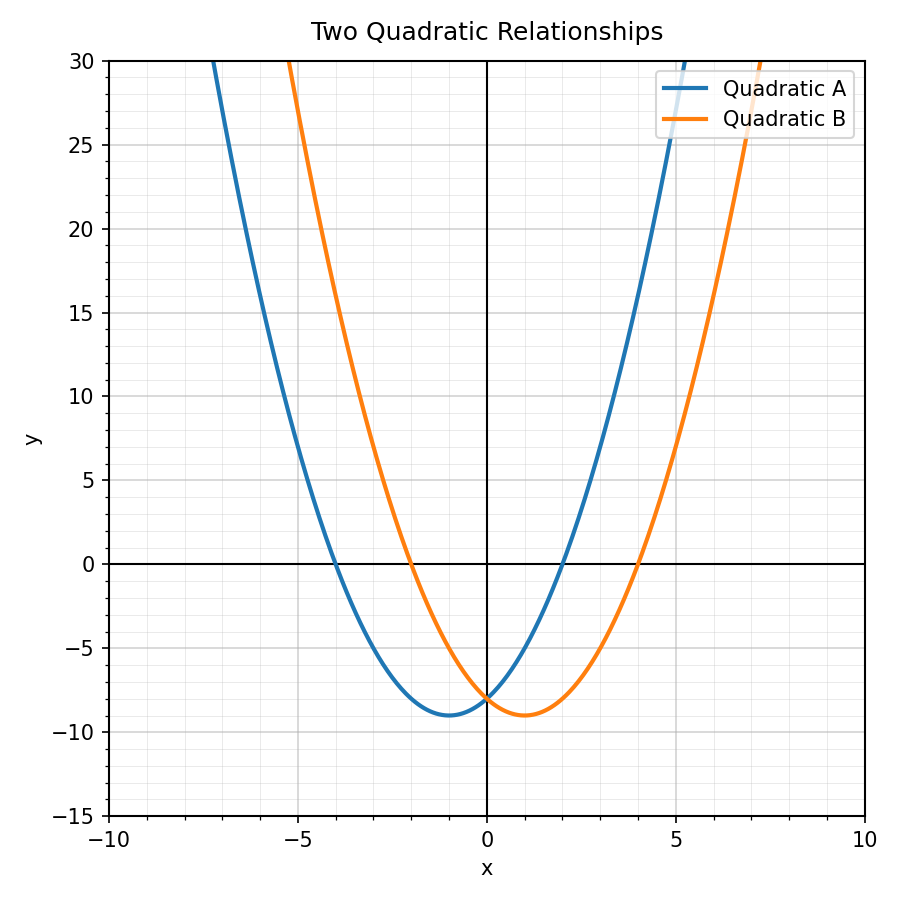
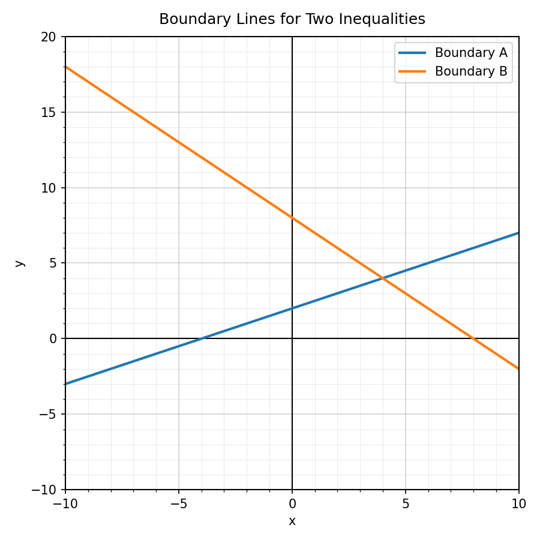

Practice Set 5.5.1
Spiral Plan and DoK Balance
Which form is shown by $y=3(x-2)^2+5$?
- standard form
- vertex form
- factored form
- table form
Assessment bank model: comparing quadratic forms.
Which feature is easiest to see from $y=(x+4)(x-2)$?
- the zeros
- the vertex
- every point on the table
- the y-axis label
A student wants to know where a quadratic crosses the $x$-axis. Which form would usually be most efficient to start with: standard, vertex, or factored? Explain briefly.
Complete the table by naming the feature that is usually most visible from each form.
| Form | Feature usually most visible |
|---|---|
| $y=a(x-h)^2+k$ | |
| $y=a(x-r)(x-s)$ | |
| $y=ax^2+bx+c$ |
Use the graph. Does each quadratic open up or down?

What does an $x$-intercept mean on a graph of a quadratic relationship?
Which word describes the turning point of a parabola?
- factor
- vertex
- coefficient
- domain
For $y=-2x^2+8x+1$, does the graph open up or down?
The table gives values for a quadratic relationship. Identify one possible maximum or minimum from the table.
| $x$ | -1 | 0 | 1 | 2 | 3 | 4 | 5 |
|---|---|---|---|---|---|---|---|
| $y$ | -3 | 4 | 9 | 12 | 13 | 12 | 9 |
Use the graph to compare the two quadratic relationships. Which model appears to have the greater maximum or minimum value?

A teammate claims two quadratics with the same zeros must have the same vertex. Is the claim always true? Justify your answer with an example or explanation.
Create two different quadratic equations that have the same zeros but different shapes. Explain how your equations show this.
Which graph boundary should be dashed: $y<2x+1$ or $y\leq 2x+1$? Explain how you know.
Determine whether $(0,0)$ is a solution to $y>x-3$.
Use the boundary-line graph. Describe what a solution to both inequalities would have to satisfy.

In a system of linear inequalities, what does the overlapping shaded region represent?